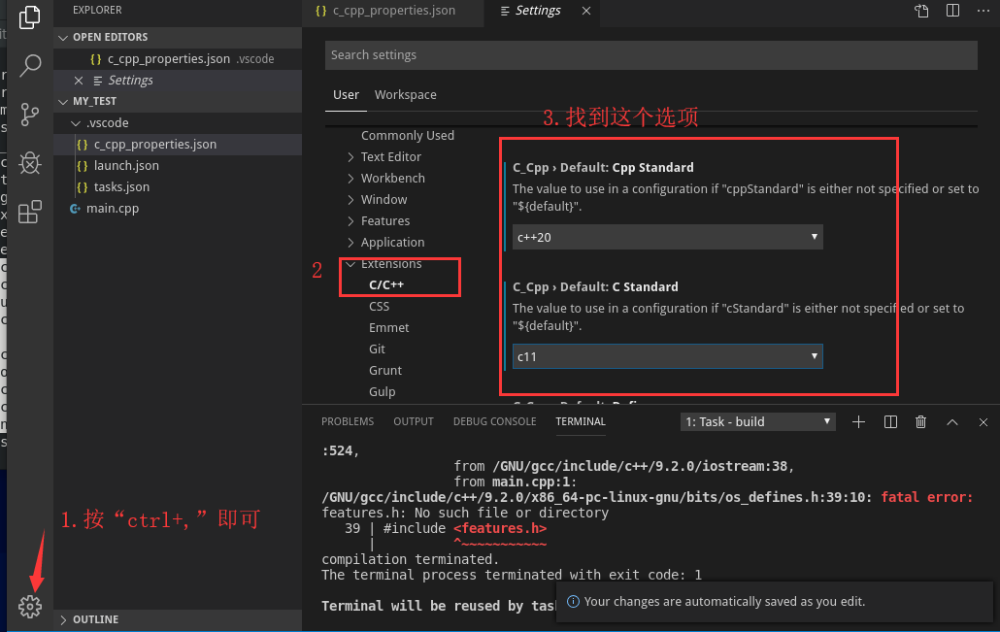
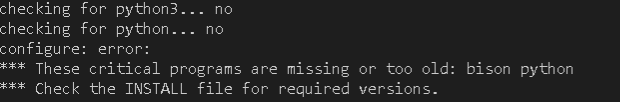

基于Cent8虚拟机下，搭建gcc/g++，gdb并使用vs code进行c/c++程序的开发
旧版
前置
- 下载gcc/g++的依赖库（需要按顺序安装）
- gdb依赖库texinfo
- 下载gcc
点击下载gcc
- 下载gdb
点击下载gdb
- 下载vs code
点击下载vs code
安装gcc依赖库
安装
make（有的话就不用安装了，使用make -v查看make版本）1
yum -y install make
安装
m41
yum -y install m4
安装依赖库之前需要使用yum安装gcc/g++
1 | yum -y install gcc-c++ |
安装
gmp1
2
3./configure --prefix=/目录
make
make install安装
mpfr1
2
3./configure --prefix=/目录 --with-gmp=/gmp目录
make
make install安装
mpc1
2
3./configure --prefix=/目录 --with-gmp=/gmp目录 with-mpfr=/mpfr目录
make
make install配置环境变量
1 | vim /etc/profile |
安装gcc与gdb
安装gcc
1 | ./configure --prefix=/目录 --with-gmp=/gmp目录 with-mpfr=/mpfr目录 --with-mpc=/mpc目录 |
在执行configure时，如果遇到错误
“I suspect your system does not have 32-bit development
libraries (libc and headers). If you have them, rerun configure with –enable-multilib.
If you do not have them, and want to build a 64-bit-only compiler, rerun configure with –disable-multilib”，
表示系统不支持32位程序，这样在执行configure时需为它支持参数“--disable-multilib"
改成：
1 | ./configure --prefix=/目录 --with-gmp=/gmp目录 with-mpfr=/mpfr目录 --with-mpc=/mpc目录 --disable-multilib |
在执行make时，如果遇到错误
“error while loadin g shared libraries: libmpfr.so.6: cannot open shared object
file: No such file or directory”
1 | //使用ln软链接 |
例子：
ln -sf A B
结果为：B -> A
B指向了A
- 配置环境变量
1
2
3
4
5
6
7vim /etc/profile
//末尾处添加
export PATH=/gcc/bin:$PATH
export LD_LIBRARY_PATH=/gcc/lib64:$LD_LIBRARY_PATH
export MANPATH=/gcc/share/man:$MANPATH
//刷新环境变量
source /etc/profile
编译命令：
1 | //-std=指定c++版本，生成的编译文件的文件名 |
安装gdb
1 | ./configure --prefix=/目录 |
出现错误makeinfo: command not found
WARNING: ‘makeinfo’ is missing on your system.
You should only need it if you modified a ‘.texi’ file, or
any other file indirectly affecting the aspect of the manual.
You might want to install the Texinfo package:
http://www.gnu.org/software/texinfo/
The spurious makeinfo call might also be the consequence of
using a buggy ‘make’ (AIX, DU, IRIX), in which case you might
want to install GNU make
缺少makeinfo文件，需要安装texinfo，详细如上
安装并使用vs code
直接解压即可使用
1 | tar [选项] vscode -C 解压目录 |
启动vs code
1 | sudo /vscode/bin/code --user-data-dir |
如果出现错误
error while loading shared libraries: libXss.so.1: cannot open shared object
file: No such file or directory
安装：
1 | yum -y install libXScrnSaver |
vs code安装c++语法
设置配置文件：
按F1输入
launch.json-> gdb ->debug配置文件
按F1输入tasks->configure tasks->create->others生成编译配置文件
launch.json
1 | "version": "0.2.0", |
tasks.json
1 | "version": "2.0.0", |
#include的查找
你会发现每个头文件下面都有个波浪线，找不到这个头文件

1 | //终端输入 |
复制红色框内所有的路径
生成路径配置文件：
按F1输入
configuration->edit configurations.json
将红框内所有路径复制到includePath里，注意添加冒号和逗号
设置vs code默认以最新版本的c++

gcc/g++编译命令
| 选项 | 功能 |
|---|---|
| -W | 显示编译器认为的错误与警告 |
| -Wall | 编译后显示所有的错误与警告 |
| -lpthread | 使用线程时，必须添加表示在链接阶段链接到pthread.h |
| -g | 使用gdb |
| -o | 指定输出文件 |
新版
让新版本与旧版本同时存在。
安装旧版本的gcc/g++与gdb:
1 | yum install gcc-c++ gdb -y |
去清华大学镜像源的gnu目录下载gmp mpfp mpc gcc texinfo gdb
- 安装顺序:
gmp –> mpfr –> mpc –> gcc
创建一个主目录，在里面创建以下一堆目录，并解压下载好嘅包:
主目录: gnu
追加多个
texinfo目录
安装gmp
进入解压后开目录，并执行以下命令
1 | # 配置安装文件 |
安装mpfr
进入解压后开目录，并执行以下命令
1 | # 配置安装文件，并设置gmp目录 |
安装mpc
进入解压后开目录，并执行以下命令
1 | # 配置安装文件，并设置gmp与mpfr目录 |
安装gcc
复制libmpfr.so.6文件:
将文件/my_file/gnu/mpfr/lib/libmpfr.so.6拷贝一份到/lib64
或者:
1 | # 在/lib64创建一个libmpfr.so.6文件 |
进入解压后开目录，并执行以下命令
1 | # 配置安装文件，并设置gmp，mpfr，mpc目录 |
安装gdb
安装gdb前需要安装texinfo（texinfo依赖perl）
- perl安装:
yum install perl
1 | # 配置安装文件 |
进入解压后开目录，并执行以下命令
1 | # 创建目录并进入 |
vs_code库文件配置
安装c/c++库
- C库：
glibclinux c语言源码 - C++库：
libstdc++（gcc自带）
安装:
1 | // 进入解压文件目录后创建文件并进入 |
出现错误:

python3，bison版本过低 或者 没有安装
1 | yum isntall python3 bison -y |
然后在次执行make install即可
设置动态库与静态库嘅全局变量
1 | # 动态库 |
使用指定glibc
- -Wl,–rpath: 动态库目录
- -Wl,–dynamic-linker: 动态库文件
1 | gcc main.c -Wl,--rpath=/glibc目录/lib -Wl,--dynamic-linker=/glibc目录/lib/ld-linux-x86-64.so.2 |